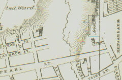

|
Today, Arbor Hill is a general term referring to a large section of the city of Albany. At its most inclusive, Arbor Hill extends West from North Pearl Street for several blocks beyond Henry Johnson (Northern) Boulevard. It is bounded on the South by Sheridan Hollow (Sherman and Elk Streets, Sheridan Avenue [Fox Street], and perhaps Orange Street). It extends North to "Tivoli Hollow." Generally speaking, most people think of Arbor Hill as the elevated parts on the North Side of Albany from Foxes Creek to Patroon's Creek. Two hundred years ago, it encompassed a somewhat more tightly defined portion of the city. In 1763, the city council deeded lots on the North side of Foxes Creek to a number of bidders. That tract was known as the Woutenbergh. In September and October 1787, a number of those deeds were re-newed while others reverted to the city for non payment of taxes. They then were re-sold. The developer's version of the city map made by Simeon De Witt in 1790 was the first to identify Arbor Hill. That plan showed Arbor Hill's eastern boundary as Barrack (Chapel) Street, Orange Street on the South, the northern city line along Patroon (Clinton Avenue) Street, and West - about half way to the end of the block ending at Hawk Street. All that land would have been on the North Side of Foxes Creek. By 1792, the plot had been gridded out for development and lots were sold to Dinnah Jackson and others. After the fire of 1793 destroyed his townhouse, General Abraham Ten Broeck built the Georgian mansion also known as "Arbor Hill" on the hill - above the river and between North Albany's two major streambeds. It stands today as the home of the Albany County Historical Association. Detail from an engraving of a city map made by Simeon De Witt in 1790. This is the earliest cartographic reference to "arbor Hill." The vertical line bordering Arbor Hill represents the end-of-century northern boundary of Albany - generally along the route of today's Clinton Avenue. The "Arbor Hill lots" were first shown but without labelling on the Robert Yates map of 1770. last revised: 6/13/11 |